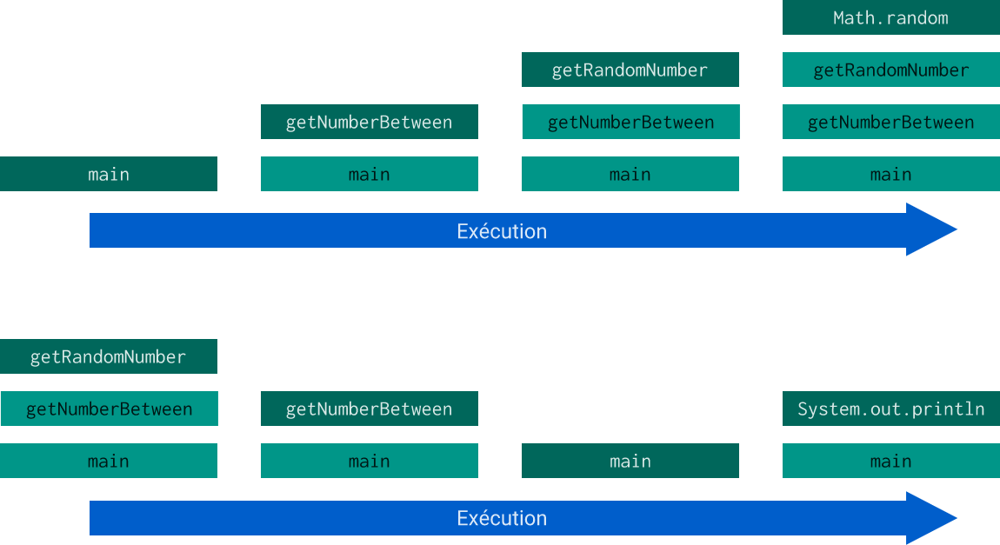
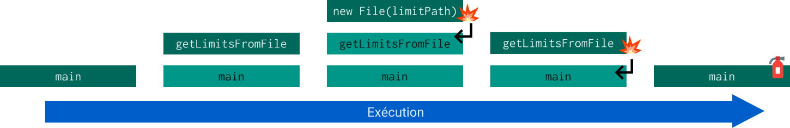

Les exceptions en Java
Qu'est ce qu'une exception ?
Evénement exceptionnel
Evénement non voulu
Comportement anormal du programme développé
En Java
Existence d'un mécanisme intégré permettant de lancer et de gérer les exceptions.
Objectif : gérer proprement les erreurs qui arrivent pendant l'exécution
Comprendre la pile d'appel
Comment marche le programme quand les fonctions s'appellent entre elles ?
Extrait de code
public static void main(String[] args) {
int random = getNumberBetween(-10, 60);
System.out.println(random);
}
public static int getNumberBetween(int lowLimit, int highLimit) {
int result = 0;
if (lowLimit < 0 && highLimit < 0) {
result = (int) ((lowLimit - highLimit) * getRandomNumber()) + highLimit;
} else {
result = (int) ((highLimit - lowLimit) * getRandomNumber()) + lowLimit;
}
return result;
}
public static double getRandomNumber() {
return Math.random();
}
Pile d'appels correspondante
Et si ça se passe mal ?
Est-ce possible dans l'exemple précédent ?
Non, ça parait difficile
Et si l'utilisateur.trice rentre en jeu ?
Exemple : On demande à l'utilisateur de spécifier le chemin d'un fichier qu'on veut lire
Potentiels problèmes :
- Le chemin du fichier pointe sur un fichier inexistant
- Le fichier existe mais ne contient pas de contenu
- Le fichier contient du contenu mais pas celui qu'on attend
C'est là que les exceptions arrivent
Une fonction gère et/ou lance des exceptions.
Lancer une exception
public static int[] getLimitsFromFile(String limitPath) throws FileNotFoundException {
int[] limits = new int[2];
Scanner scanner = new Scanner(new File(limitPath));
limits[0] = scanner.nextInt();
scanner.nextLine();
limits[1] = scanner.nextInt();
scanner.nextLine();
scanner.close();
return limits;
}
Gérer une exception
public static void main(String[] args) {
System.out.println("Bienvenue dans l'application de calcul de nombre aléatoire !");
int[] limits;
try {
String limitPath = getFileNameFromConsole();
limits = getLimitsFromFile(limitPath);
System.out.println(getNumberBetween(limits[0], limits[1]));
} catch (FileNotFoundException e) {
System.out.println("Le fichier \"limite\" que vous avez spécifié n'existe pas.");
System.out.println("Impossible de calculer un nombre aléatoire.");
} finally {
System.out.println("Merci d'avoir utilisé mon application, aurevoir");
}
}
Pile d'appels correspondante
Plus de détails sur la gestion
Le try est le bloc où les instructions sont autorisées à renvoyer des exceptions
Le(s) catch(s) sont là pour capturer les exceptions lancées dans le try et agir en conséquence
Le finally est un bloc qui s'exécute dans tous les cas même après une exception
Les ressources utiles pour approfondir les notions de Stream